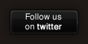

|
a web-based IDE for NodeJS applications (more)
|

|

|
You can edit and save your programming projects, using the on-screen Bespin editor that provides syntax highlighting and natural keyboard shortcuts. Executing your project is performed by clicking 'Execute'. After the execution is finished, the console will be displayed containing the program's output. If the program is a server or enters an infinite loop, it will be killed after 5 minutes, but you can terminate its execution by clicking 'Terminate'. Currently projects are single-file, but soon you will be able to have multiple files per project. You may create multiple projects, rename or delete them using the links on top of the screen. You don't need to create an account to use nodify, a unique user account is created and stored in a cookie in your browser. Currently, if you browse the service from a different browser you will create a new user account.
There is also an option to install nodify locally using npm:npm install nodify
Then run "nodify" to launch the IDE and use your browser to access it.
Do you want to permanently delete this project?